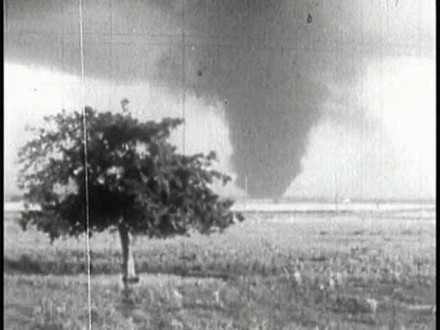
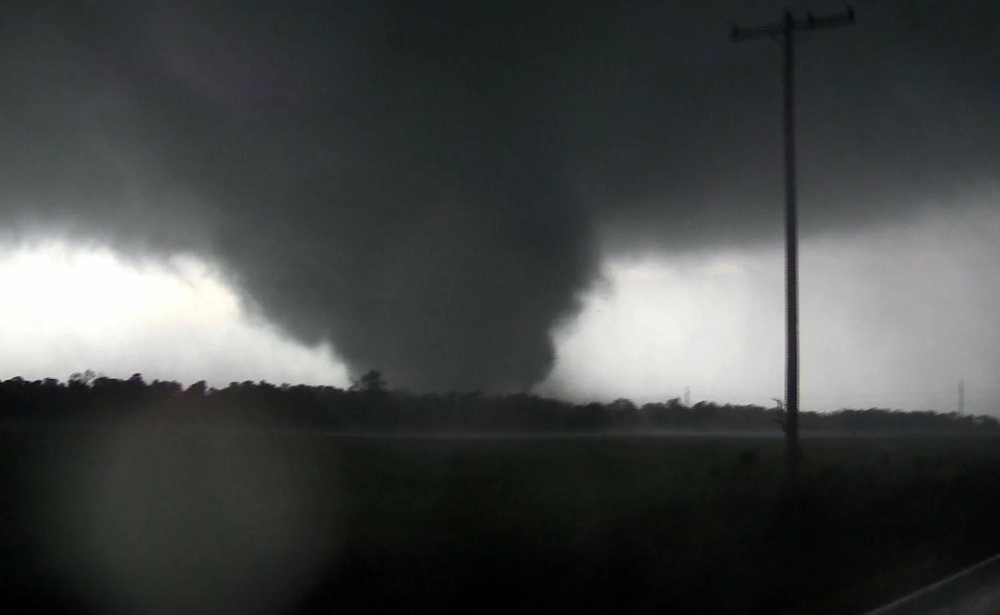
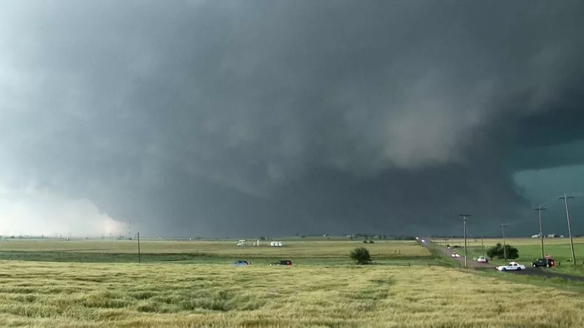
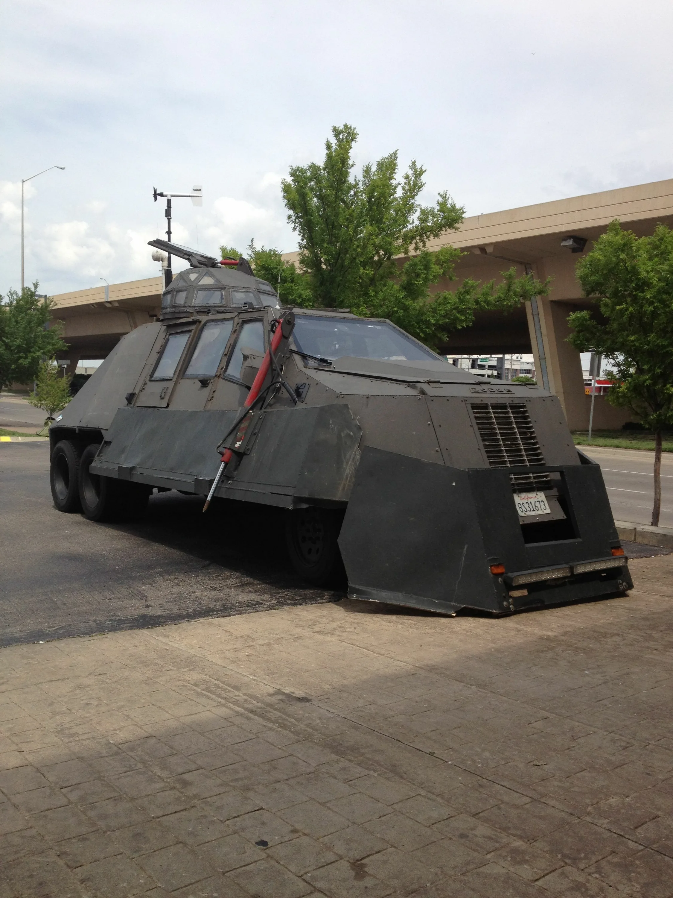

<!DOCTYPE html>
<html lang="ru">
<head>
    <meta charset="UTF-8">
    <meta name="viewport" content="width=device-width, initial-scale=1.0">
    <title>Tornado.Watch - Хроники Разрушений</title>   
    <link rel="stylesheet" href="style.css">
</head>
    </body>
</html>

    <header class="top-navbar">
    <a href="index.html" class="logo-container">
        <span class="logo-icon">🌪️</span>
        <span class="logo-text">Tornado.Watch</span>
    </a>
    
    <nav class="nav-links">
        <a href="index.html" class="nav-link active">Главная</a>
        <a href="vehicles.html" class="nav-link">Перехватчики</a>
        <a href="map.html" class="nav-link">Интерактивная карта</a> 
    </nav>
</header> 
<section class="live-monitor" style="text-align: center;">
    <div class="container">
        <h2 style="color: #fff; margin-bottom: 15px; font-size: 2rem;">Официальный мониторинг</h2>
        <p style="color: #ccc; max-width: 600px; margin: 0 auto 30px auto; font-size: 1.1rem;">
            Ситуация с торнадо меняется каждую минуту. Для отслеживания штормовых предупреждений в реальном времени мы используем данные правительственного Центра прогнозирования штормов (NOAA).
        </p>
        
       <div class="monitor-controls" style="text-align: center;">
    <a href="https://www.spc.noaa.gov/" target="_blank" class="red-action-btn">
        Открыть радар NOAA (США)
    </a>
</div>
    </div>
</section>

    <main>
        <section class="section">
            <h2 class="section-title">Классификация по шкале Фудзиты (EF)</h2>
            <div class="ef-container">
               <div class="cards-grid">
    
    <div class="info-card">
        <h3>EF0 Слабые торнадо</h3>
        <p><strong>Скорость:</strong> 105–137 км/ч</p>
        <p><strong>Последствия:</strong> Повреждение дымоходов, поломка веток деревьев, срыв старых телеантенн.</p>
    </div>

    <div class="info-card">
        <h3>EF1 Умеренные торнадо</h3>
        <p><strong>Скорость:</strong> 138–177 км/ч</p>
        <p><strong>Последствия:</strong> Срыв покрытия с крыш, вырывание деревьев с неглубоким корнем, переворачивание легких машин.</p>
    </div>

    <div class="info-card">
        <h3>EF2 Значительные торнадо</h3>
        <p><strong>Скорость:</strong> 178–217 км/ч</p>
        <p><strong>Последствия:</strong> Срыв крыш с домов, разрушение мобильных домов, вырывание крупных деревьев с корнем.</p>
    </div>

    <div class="info-card">
        <h3>EF3 Сильные торнадо</h3>
        <p><strong>Скорость:</strong> 218–266 км/ч</p>
        <p><strong>Последствия:</strong> Срыв крыш и частичное разрушение стен прочных домов, опрокидывание поездов, отбрасывание тяжелых машин.</p>
    </div>

    <div class="info-card">
        <h3>EF4 Разрушительные торнадо</h3>
        <p><strong>Скорость:</strong> 267–322 км/ч</p>
        <p><strong>Последствия:</strong> Полное разрушение хорошо построенных домов (остается только фундамент), превращение машин в летающие снаряды.</p>
    </div>

 <div class="info-card">
        <h3>EF5 Невероятные торнадо</h3>
        <p><strong>Скорость:</strong> свыше 322 км/ч</p>
        <p><strong>Последствия:</strong> Снос крепких домов с фундамента и перенос их на значительные расстояния, срывание асфальта с дорог, тотальное уничтожение.</p>
    </div>
</div>
            </div>
        </section>

        <section class="section">
    <h2 class="section-title">Хроники Разрушений</h2>
    
    <p style="text-align: center; color: #ccc; margin-bottom: 40px; font-size: 1.1rem; max-width: 800px; margin-left: auto; margin-right: auto;">
        Эти три шторма навсегда вошли в историю метеорологии. Они продемонстрировали истинную, неконтролируемую мощь природы и заставили человечество пересмотреть подходы к безопасности, строительству и прогнозированию.
    </p>

    <div class="cards-grid">
        
        <div class="tornado-card">
            
            <div class="tornado-info">
                <h3>Торнадо «Трех штатов» (1925)</h3>
                <p><strong>Длина пути:</strong> 352 км (рекорд)</p>
                <p><strong>Жертвы:</strong> 695 человек</p>
                <p>Самый смертоносный торнадо в истории США. Он непрерывно двигался по земле 3.5 часа, стирая с лица земли целые города в Миссури, Иллинойсе и Индиане.</p>
            </div>
        </div>

        <div class="tornado-card">
            
            <div class="tornado-info">
                <h3>Джоплин, Миссури (2011)</h3>
                <p><strong>Категория:</strong> EF5</p>
                <p><strong>Ущерб:</strong> $2.8 млрд</p>
                <p>Монстр шириной в милю, который прошел прямо через густонаселенный город. Один из самых разрушительных штормов в современной истории Америки.</p>
            </div>
        </div>

        <div class="tornado-card">
            
            <div class="tornado-info">
                <h3>Эль-Рино, Оклахома (2013)</h3>
                <p><strong>Ширина:</strong> 4.2 км (рекорд)</p>
                <p><strong>Особенность:</strong> Непредсказуемость</p>
                <p>Самый широкий торнадо из когда-либо зафиксированных. Воронка хаотично меняла направление и скорость, что привело к гибели команды перехватчиков TWISTEX.</p>
            </div>
        </div>

    </div>
</section>

        <section class="section">
    <h2 class="section-title">Охотники за торнадо (Storm Chasers)</h2>
    
    <div class="feature-section">
        
        <div class="feature-image">
            
        </div>

        <div class="feature-text">
            <h3>Погоня за монстром</h3>
            <p>Охотники за штормами — это метеорологи, исследователи и экстремалы, которые намеренно приближаются к торнадо. Их главная цель — сбор критически важных данных и съемка редких кадров.</p>
            
            <h3>Их броня: Автомобили-перехватчики</h3>
            <p>Профессионалы строят специализированные транспортные средства, такие как <strong>Dominator</strong>.</p>
            <ul>
                <li><strong>Броня:</strong> Сварные стальные пластины, защищающие от обломков.</li>
                <li><strong>Стекла:</strong> Пуленепробиваемый поликарбонат, способный выдержать удары.</li>
                <li><strong>Гидравлика:</strong> Машины умеют "приседать" к днищу.</li>
                <li><strong>Якоря:</strong> Специальные стальные колья вбиваются в землю, фиксируя машину.</li>
            </ul>
        </div>
        
    </div>

    <div class="tragedy-memo">
        <h4>Трагедия TWISTEX (Эль-Рино, 2013)</h4>
        <p>31 мая 2013 года во время преследования торнадо в Эль-Рино погибли легендарный исследователь <strong>Тим Самарас</strong>, его сын Пол и метеоролог Карл Янг...</p>
        <p>Их небронированный Chevrolet Cobalt отбросило почти на километр. Эта трагедия стала напоминанием о том, что природу невозможно полностью предсказать.</p>
    </div>
</section>
    </main>

    <footer>
        <p>&copy; 2026 Исследование Торнадо</p>
    </footer>

    <script>
        function toggleEF(header) {
            const card = header.parentElement;
            const container = document.querySelector('.ef-container');
            const allCards = container.querySelectorAll('.ef-card');
            const isActive = card.classList.contains('active');

            allCards.forEach(c => c.classList.remove('active'));

            if (!isActive) {
                card.classList.add('active');
            }
        }
    </script>
</body>
</html>